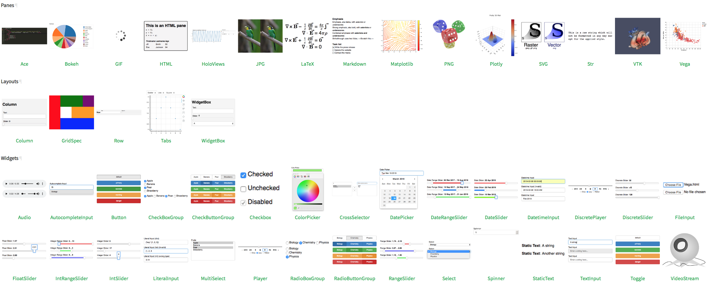
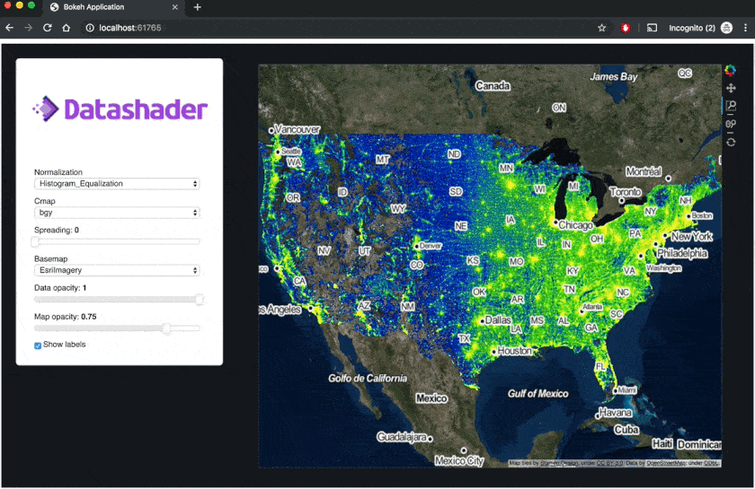

Panel Announcement

A high-level app and dashboarding solution for the PyData ecosystem.
Author: Philipp Rudiger
Panel is a new open-source Python library that lets you create custom interactive web apps and dashboards by connecting user-defined widgets to plots, images, tables, or text. It is the culmination of our multi-year effort to connect data scientists with tools for deploying the output of their analysis and models with internal or external consumers of the analysis without having to learn completely different technology stacks or getting into the weeds of web development. Panel can already be installed using either conda install -c pyviz panel or pip install panel, and like all other PyViz projects it is entirely open-source and BSD-3 licensed. To get started visit the website and find the Panel code on GitHub.
The main aim behind Panel was to make it as easy as possible to wrap the outputs of existing tools in the PyData ecosystem as a control panel, app, or dashboard, ensuring that users can seamlessly work with the analysis and visualization tools they are already familiar with. Secondly, Panel aims to make it trivial to go from prototyping a little app to deploying it internally within an organization or sharing it publicly with the entire internet.
Fast iteration

In our consulting work at Anaconda Inc. we have repeatedly seen the pain involved in turning initial analysis code into insights that can easily be shared with decision makers within an organization or the general public. Because the technologies involved in exploration and deployment are often very different, there are often separate teams working on the prototyping and development phases compared to those involved in building and deploying an app that can be shared with users not comfortable with Python programming. This separation between teams introduces a huge amount of friction, with even minor changes that have to be communicated between teams becoming very complex to explain and track, increasing the length of the iteration cycle exponentially. Panel aims to address this gap by providing simple Python APIs to connect the outputs of a Python analysis with web-based widgets and other interactive components, immediately making insights accessible to a wider audience.
Most importantly, Panel apps can easily be built entirely within a Jupyter notebook, where a lot of modern data science happens. After an iterative process to slowly polish and improve the app or dashboard, it can be deployed in a scalable way on a Bokeh-based server simply by annotating the objects to be deployed with a call to .servable(). The process of developing an app with Panel can therefore be broken down into a small number of steps:
- Perform some analysis in a notebook, using whatever tools are convenient and effective for you
- Wrap the output of your analysis as a Panel “pane”, allowing it to be used together with other Panel componentsothers
- Connect the individual analysis outputs with widgets and other interactive components to form a full “panel”
- Display these components in the notebook and iterate until you are happy with the result
- Apply styling using CSS or inbuilt Bokeh styling options, if you wish
- Test how the app or dashboard looks as a standalone web server by adding
.show() - Make the app or dashboard deployable by annotating the components to be deployed with
.servable() - Deploy the app locally or on a public server using
panel serve nb.ipynb
This quick back-and-forth iteration between prototyping in a notebook and deploying the final product is an incredibly convenient and powerful way to create a compelling and useful application, easily alternating between exploration and delivery of your insights to your audience. Thanks to the power of the underlying Bokeh layout engine and server, all the complex layout and styling options translate seamlessly between the different environments so that you can focus on your data and your audience.
Flexible APIs
To demonstrate the power of Panel, let us look at one of the simplest possible apps, a stock explorer implemented in just a few lines of code (view the source notebook here):
As you can observe in the code, Panel provides a number of different abstraction layers to write this kind of app. To get a quick overview, let us look at the three most common APIs for building apps outlined in the Panel user guide.
Interact
The simplest approach to building an app is the interact function familiar to users of ipywidgets, which automatically creates a set of widgets and some visual output from a supplied function. As a simple example, the following pattern will generate a dropdown menu and display it next to a plot:
def plot(ticker):
...
return plot_object
pn.interact(plot, ticker=['AAPL', ...])Because Panel is compositional, we can index into the layout returned by the function, making it easy to write basic apps and lay them out precisely how you want.
Reactive
The interact approach builds on the idea of reactive programming, but has additional magic that automatically creates widgets for you. The more explicit approach provided by Panel is to create each widget yourself, use the pn.depends decorator to declare how those widgets map to function inputs, and then manually compose the widgets and outputs:
ticker = pn.widgets.Select(options=['AAPL', ...])
@pn.depends(ticker.param.value)
def plot(ticker):
...
return plot_obj
pn.Row(ticker, plot)Thanks to the reactive programming model that underlies Panel, the plot will update whenever any of the declared dependencies of the function change.
Callbacks
To achieve full control over updates to different components, it is also possible to define specific callbacks when a parameter on a Panel component changes. These callbacks can in turn modify other components, such as the Panel Row, Column, and Tabs layouts that act like ordinary lists that are already familiar to Python programmers:
row = pn.Row('Empty')
select = pn.widgets.Select(options=['AAPL', ...])
def cb(event):
...
row[0] = bokeh_fig # Replace a component
select.param.watch(cb, 'value')Users can choose between these three different approaches to ensure they have just the right level of control needed for a particular use case while being able to build dashboards of any complexity.
Compatibility with the Python ecosystem
Compared to other Python dashboarding frameworks, Panel is novel in that it supports nearly all common Python plotting libraries and automatically chooses the appropriate representation for basic Python types and other objects in the Python ecosystem. A straightforward example is a Pandas dataframe, which will automatically be given the rich HTML representation users will be familiar with when working inside a notebook environment.
In the previous example we rendered the plot using hvPlot (and Bokeh), but the same example works just as well with matplotlib, altair or Plotly. To demonstrate this, let us look at an example showing four plots of the Gapminder data implemented using each of these libraries, displayed in a single dashboard:
Dynamic dashboards
Another important design goal for Panel was the ability to build dynamic dashboards where components can easily be added, removed, or updated. This makes it possible to build even the most complex dashboards, including multi-stage processing pipelines. In the example below, we build an object recognition and classification tool from a number of independent stages, which are connected into a single pipeline:
Broad and expanding library of components
Panel ships with a wide array of components providing a large set of widgets, a number of powerful layout components, and most importantly a collection of “pane” types that provide a visible representation of some underlying object, e.g. a plot, image or dataframe.

Because Panel is built on the technology underlying Bokeh, it is straightforward to extend it with arbitrary custom models implemented in JavaScript. It is even simpler to implement a new Pane class that provides a visual representation for any Python object not currently handled by Panel. In this way, Panel can easily be extended to visualize objects of almost any type and provide useful representations for objects anyone uses in their day-to-day work.
Layouts and styling
Panel exposes the incredibly powerful layout engine built into the Bokeh library and also provides the ability to style different components directly, using Bokeh themes or, when more control is required, using CSS. This makes it possible to build dashboards that resize reactively to the current size of the browser window, or to extensively customize the visual appearance. As an example, take a look at the Datashader dashboard below with a responsively resizing plot and custom dark-theme styling:

Deployment
The final piece that was very important to us when designing Panel was that the deployment story should be straightforward. Thanks to Bokeh Server, large parts of this problem were already solved, providing us with Websocket communication with support for binary transfer, as well as streaming and patching data. On top of this mechanism, we focused on making it quick to iterate between Jupyter notebook and deployed server contexts by allowing users to denote any Panel object in a notebook with .servable(), which indicates that it can be deployed separately as an app while still letting it display itself in the notebook, without any code changes.
Over the coming weeks we will also add detailed guides to explain the Python-server deployment procedure on different platforms, including AWS, Google Cloud, Heroku, and Anaconda Enterprise. In many cases Panel objects can also be exported to static, standalone HTML/JavaScript files that no longer need a Python server, either by linking widgets to display properties using JS or by sampling the output of the state space of a set of widgets, capturing the possible results in the file so that it can be distributed on websites or in emails without a running Python process.
Architecture
Panel is built on top of two main libraries:
- Bokeh provides the model-view-controller framework on which Panel is built, along with many of the core components such as the widgets and layout engine
- Param provides a framework for reactive parameters which are used to define all Panel components.
The choice to build an API on top of Bokeh instead of simply extending it was driven by a number of core requirements. One of the most important was the ability to transition seamlessly between notebook and deployed server contexts, and doing so efficiently and in a scalable way. Another was the flexibility afforded by being able to dynamically generate a Bokeh representation for each view of a Panel object, encouraging reuse and composability of components. A third reason was to make it clear that Panel supports any viewable Python object, including plots from dozens of different libraries, not just Bokeh plots (Panel uses Bokeh internals and technology, but in no way assumes that you will use it with Bokeh plots).
Most importantly, however, we wanted to design an API that provides a high degree of both flexibility and simplicity. Many of the most common operations for displaying, saving, and serving a dashboard are exposed directly on Panel objects and uniformly across them, making it simpler to work with them. Additionally, updating and even dynamically adding/removing/replacing the indvidual components of a dashboard are as easy as manipulating a list or dictionary in Python. Of course, Panel should not be seen to be in competition with Bokeh; it simply provides higher-level abstractions on top of Bokeh. If needed, Bokeh components can easily be used from within Panel, and Panel components can easily be converted into Bokeh models which can be embedded in a larger Bokeh application.
Comparison to other dashboarding and widget libraries
Panel is a new library in this space but it is heavily inspired by existing concepts and technologies that have in many cases been around for decades. The three main inspirations for Panel were R’s Shiny library, Jupyter’s ipywidgets library, and Plotly’s Dash and we owe all three libraries/ecosystems much gratitude for pioneering.
Shiny
For anyone who performs analysis in the R programming language, Shiny provides an incredibly powerful and well polished framework for building web applications. It sets an incredibly high bar, from which Panel has taken large amounts of inspiration. In particular, the reactive patterns in Panel are closely modeled on Shiny, and Panel hopes to provide a similarly easy entrypoint for developing web applications in the Python ecosystem. Despite the similarities, Panel is not merely a Shiny clone for Python. In addition to the different constraints imposed by a different language, Panel takes a much more explicit approach toward the UI layout, which is usually separated into a separate file from the business logic in Shiny.
Jupyter/ipywidgets
The Jupyter ecosystem has led to an explosion in the ability to share and disseminate the results of analysis and been a major driver in pushing Python as the most important programming language in scientific analysis, data science, and machine learning. Within the Jupyter ecosystem, the ipywidgets library has provided the foundation for building interactive components and embedding them in a notebook. The community that has developed around this ecosystem has been a major inspiration and many core ideas in Panel are built on concepts popularized by these libraries, including the ability of objects to display themselves with rich representations, easily defining links between components in JS code, and Panel’s interact API. The main difference between Panel and ipywidgets is that the Panel architecture is not closely coupled to the IPython kernel that runs interactive computations in Jupyter. Although Panel fully supports operation in Jupyter notebooks, it is based on a generalized Python/JS communication method that is also fully supported on standalone non-Jupyter servers, making Panel apps work equally well inside and outside of Jupyter contexts.
Dash
Like Panel, Plotly’s 2017 Dash library allows building very complex and highly polished applications straight from Python. Dash is also built on a reactive programming model that (along with Shiny) was a big inspiration for some of the features in Panel. Panel and Dash are quite different in other ways, though. Dash is (by design) focused specifically on support for Plotly plots, while Panel is agnostic about what objects are being displayed, and is designed to support whatever visualization or analysis tools are most appropriate for your workflows. Dash also typically requires much more detailed knowledge of low-level web development, while Panel allows users to simply drop in their components, building a usable dashboard in just a few lines of Pythonic code.
Open source license & Community
Panel is BSD licensed and therefore free to use and modify by anyone and everyone. We built Panel to make our consulting work easier and give the individuals in those organization more power, but developing something among a small group of developers only goes so far. We believe everyone benefits when communities join their efforts to build tools together. So if you are interested in contributing to Panel or even just have suggestions for features, fixes, and improvements, join us on GitHub or Gitter.
Thanks for checking out Panel! We will be giving a talk and tutorial about it at SciPy 2019 in July and are actively working on building further materials, including more demos, tutorials, and examples in the coming weeks and months!
Further resources
- Our documentation is hosted at https://panel.pyviz.org
- The main development repository for Panel is on GitHub
- Join us on Twitter @PyViz_org
- Find a collection of demos and examples on GitHub